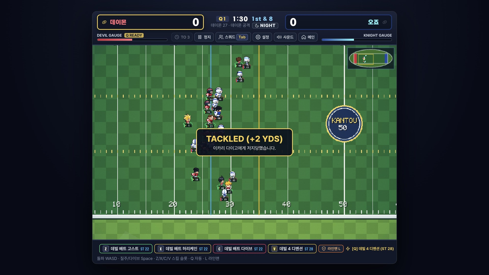

아이실드 21 : 택티컬 풋볼 매니저
초직관 5키(Q·E·A·S·D) 11 vs 11 실시간 미식축구와 캐릭터별 전술 이해도(Football IQ) 6성향 AI, 대원 정발 리마스터 112종 사쿠가 컷인·잔상 VFX, 내장 9곡 스포츠 록 BGM & 애니 OST 12선 쥬크박스, 1~37권 전면 개편 15챕터 만화 스토리(★45), 42팀 871명 감독 커리어·2,000km 데스마치를 한 번에 즐길 수 있습니다.
필살기 · 전술 AI사쿠가 112종 · 6성향 IQ
스토리 · 사운드개편 15챕터 · 9곡 BGM
설치 패키지EXE · DMG · APK · Web